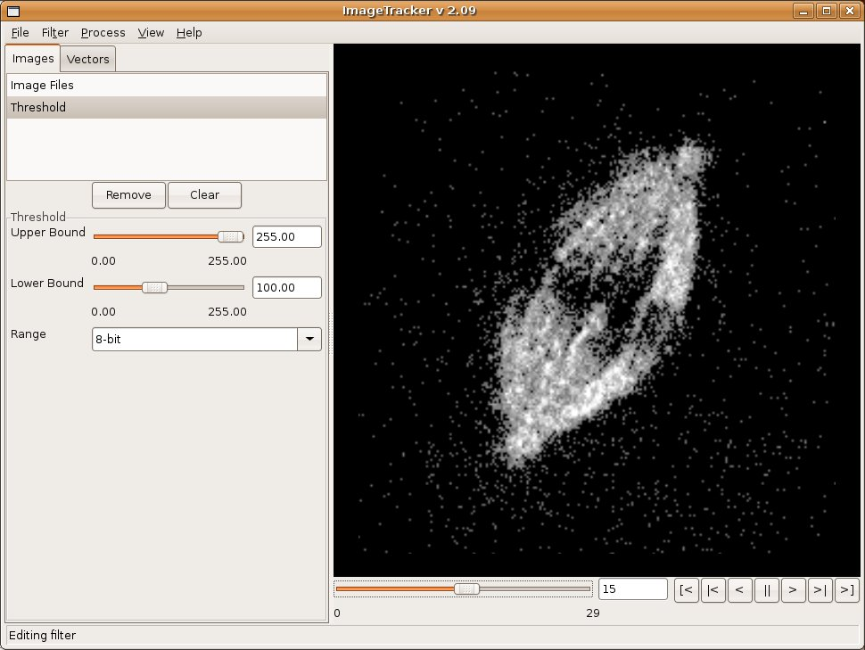

Table of Contents
- Introduction
- Installation
- Working with Images
- Loading Images
- Loading Vectors
- Vector Visualization
- Image Controls
- Saving Visualizations
- Filters
- Threshold
- Gaussian
- Stabilization
- Transforms
- Removing Occlusions
- Flow Computation
- CLG Optical Flow
- Horn & Schunck Optical Flow
- Flow Integration
- Saving View Images
- Visualization with ParaView
- Version History
- Version 2.07
- Version 2.06
- Version 2.05
- Version 2.04
- Version 2.03
- Version 2.02
- Version 2.01
- Version 2.00
- Version 1.00
Introduction
ImageTracker is an application designed to track and measure motion in image sequences. Videos often contain motion of several types, and analysis of these motions can be difficult. For example, videos of cells dividing show the cell moving within solution, kinetochores moving back and forth accross the cell equator, and microtubule structures migrating from the equator to the poles. ImageTracker enables analysis of this type of motion through a multiscale approach. The video is first stabilized with respect to global motion and flow analysis of smaller scale structures follows.
ImageTracker was written to analyze microscopy videos. Several challenges in analyzing microscopy video mean ImageTracker's performance will depend partially on the nature of the video being analyzed. In particular, performance may suffer on videos that have low signal-to-noise ratio, poor feature resolution, sparse temporal sampling (objects move too much between fames), and short object life (features appear and disappear frequently).
The text of this guide refers to the Windows version of ImageTracker, but the screenshots are of the Linux version. The difference between ImageTracker versions on these two platforms is purely aesthetic.
Installation
Remove previous versions of ImageTracker from your computer before installing updates. To uninstall ImageTracker, select Start—>All Programs—>NSRG—>ImageTracker—>Uninstall ImageTracker from the start menu.
Note: ImageTracker is a stand-alone application and does not require the NSRG Runtime.
Download and execute the installer from the NSRG download page. The NSRG developers recommend that you accept all default parameters in order to conform to NSRG standards. This will create a folder on your harddrive, C:\NSRG\bin\ImageTracker, and will add to your programs menu a folder NSRG\ImageTracker.
Run ImageTracker by selecting Start—>All Programs—>NSRG—> ImageTracker—>ImageTracker.
The ImageTracker main window.
Program information will be written to a logging file at various points during execution. This information may be useful for making sure the application is still running or troubleshooting the application if something goes wrong. You can view the log messages by selecting View—>Logger. Each log message has an associated logging level on the following scale of increasing severity: Verbose, Debug, Info, Warn, Error. From the logging window you can limit what messages get logged—all messages at or above the selected logging level will be written. Info is the recommended logging level; lower levels can produce enough messages to noticably slow down the application. The log messages displayed in the logger dialog do not update automatically. Press the Refresh button to refresh the logger messages.
Occasionally messages from libraries ImageTracker depends on may be printed to other locations. Some of the ITK classes used in image registration print messages to the console (standard out) if ImageTracker is launched from a command line (not common on Windows). VTK classes sometimes print messages to a separate logging window; this usually indicates something has gone very wrong with the visualization system.
The progress dialog displayed while ImageTracker is performing image registration.
Working with Images
ImageTracker operates on stacks of individual image files; a set of images constitutes a video. ImageTracker can read many types of images, including TIFF, PNG, JPG, MHA, and VTK. There have been some problems reading some types of TIFF images, but this should be remedied as of ImageTracker v2.00. Currently, ImageTracker does not support metamorph stacks, video files (e.g. AVI, WMV), or raw camera files. Software such as ImageJ can be used to convert images in these file formats into a format ImageTracker can read.
Loading Images
The Image Files control panel specifies which image files are loaded in ImageTracker.
- Example
- Select a single image, and let ImageTracker find files with the same naming convention. This is the easiest way to specify a series of files.
- Selection
- Select multiple files to add to the file list. The file names will be sorted alphabetically as they are added. A maximum of around 1000 file names can be selected at one time.
- Pattern
- Specify a file series naming convention pattern by selecting a root directory, file prefix, number format, file extension, and numeric range. Press the Enter key as you modify each field in the pattern specification dialog to update the example name displayed below. (This option is seldom used— use it if you have a large number of files in a series, but only want to operate on a subset of that series.)
- Remove
- Remove any selected file names from the list.
Loading Vectors
A vector image is an image in which every pixel contains vector information instead of intensity information. For example, the output of an optical flow computation, discussed elsewhere in this guide, is a vector image that explains the motion of intensities between images.
Vector data is loaded in a similar way to image data. Click on the Vectors tab of the data control panel to bring up the vector file control panel. A list of vector image files can be modified in the same way as the list of image files on the Images tab. The visualization control panel below the vector file list provides options for how to display the vector image data.
Vector Visualization
Vector images can be displayed with two different visualizations: Glyph and Height Map. The Method combo box in the vector visualization control panel selects between these two options. Controls below this combo box enable modifying aspects of the visualization.
Note: if the controls for the current visualization are not visible (this sometimes happens when the vector images are automatically loaded as the result of a processing task), press the Apply button below the vector image list. This should update the control panel.
ImageTracker's vector glyph visualization.
ImageTracker's vector height map visualization.
Image Controls
ImageTracker displaying an image sequence of fibrin sheet manipulation.
To change the magnification of the current image, right click on the image, and drag the mouse up or down. To move the current image, center click on the image and drag the mouse in the desired direction. To rotate an image, left click on the image and drag the mouse.
The Window/Contrast dialog controls display properties of images in ImageTracker.
Image size and intensity statistics for the currently displayed image can be shown by selecting View—>Image Info from the menu. This will display the Logger window with the most recent message containing the image information. Note that a log level of Info or lower needs to be selected in order for the image information to be displayed.
The image frame control in ImageTracker.
Images and vector visualizations are displayed simultaneously. The frame index range is based on the larger of the number of loaded images and loaded vectors. If the two sequences are of different sizes, the visualization from the shorter sequence will no longer update once the frame index exceeds the length of that sequence.
Saving Visualizations
To save a visualization displayed by ImageTracker, select File—>Save View Images. This will bring up a dialog that enables selecting an output directory, file naming convention, and the range of frames to save.
Warning: Do not let any other window obscure the ImageTracker image display panel and do not minimize ImageTracker when saving visualizations. Doing so will corrupt the saved images. The frame index slider provides progress information and a message will be displayed when ImageTracker has finished saving the visualizations.
Warning: If you save a set of visualizations, then resize the image display panel, and then try to save another set of visualizations, ImageTracker will crash. The VTK class responsible for capturing images from the image display panel does not handle this gracefully.
Filters
ImageTracker has two main image manipulation modes: filtering and processing. Filtering applies an operation on images as they are displayed in the ImageTracker image panel, and results are visible instantly. (This is similar to filtering in other imaging applications such as ImageJ or Gimp.) Processing typically involves more complex computations that create a new set of output images; those new images must be loaded into ImageTracker to see the results of a processing task.
Filtering is often used to prepare an image set for processing. The list at the top of the Images tab in the control panel contains the names of all filters that are being actively applied. The Image Files filter is a special filter that is always present and can be used to load image files as shown above. Other filters can be added to the list by selecting them from the Filters menu. Filters are chained and applied in the order that they appear in this list. Selecting any filter in the filter list displays that filter's configuration panel below the filter list. Changes to filter parameters are visible instantly in the image window.
The Remove button at the bottom of the filter list removes the currently selected filter from the filter list. The Clear button resets the filter list to its initial state with no filters or image files loaded.
Threshold Filter
 The Threshold filter limits the range of intensities present in an image.
{kind=link}
- Upper and Lower Bound
- Sliders that adjust the range of pixel intensities that pass through the threshold filter.
- Range
- Controls the range of pixel intensities displayed on the threshold bound sliders. There are presets for 8-bit and 16-bit images, and an option for setting the slider range to match the intensities of the current input image.
Gaussian Filter
The Gaussian filter applies smoothing to an image.
{kind=link}
- X- and Y-direction Scale
- Sliders that select the Gaussian kernel scale along the x and y dimension of the input image. The scale determines the standard deviation of the Gaussian kernel in pixel units.
- X- and Y-direction Order
- Controls the order of the Gaussian filter applied along each dimension.
Saving Data

This control panel is common to all ImageTracker processing tasks that output images.
Whenever ImageTracker needs to save image data, a dialog box will prompt for output. The output options are always the same.
- Directory
- The directory in which to save all output files
- Prefix
- The prefix to apply to saved images
- Number format
- A C-style number format, e.g. %04d, which means a zero-padded 4 digit integer
- Extension
- The file type extension to apply; ImageTracker will often choose this for you
- File index range
- The beginning and ending index for the file sequence; ImageTracker will often choose this for you
Visualization
ImageTracker provides different data source visualizations based on the type of data loaded. Selecting a data source will display appropriate visualization controls in the panel below the data source panel. For all visualization controls, a check box turns on and off the visibility of the currently selected data source.
Stabilization
ImageTracker can stabilize video sequences with respect to certain types of motion through image alignment or registration. In this process an object of interest is identified by the user. ImageTracker will attempt to align all images in the sequence such that this object of interest appears in the same location across all frames. In this context, alignment, registration, and stabilization are all terms that describe the same process.
Multiple Resolution Registration

A six level image pyramid.
Multiple resolution registration aligns images iteratively using a series of coarse to fine image resolution sclales. This method provides a dual advantage over single-scale resolution: it typically performs faster and is more robust to large initial displacements. The method relies on the user specifying an image pyramid, that defines a series of image resolutions. Registration is performed at each pyramid level starting at the most coarse; the result of each level's registration is propagated to the next level of the pyramid.
Each lower resolution level of the image pyramid is generated by smoothing and rescaling the preceding image to half its width and height.
Lauch the Multi-Resolution Registration dialog by selecting Enhance->Stabilize from the ImageTracker menu. The alignment dialog consists of several sections: thresholding, smoothing, optimization, and output. Thresholding and Smoothing alter input images so that alignment is easier to perform. An altered sample image (the first in the data source) appears in ImageTracker's image display window.
Thresholding
Thresholding an image controls what intensity ranges are considered during alignment. This image has been propery thresholded to select only the center part of the mitotic spindle.
Thresholding selects a range of pixel intensity values to use for registration. In many images, an object of interest will be of a certain intensity, and background objects will be of a different intensity. Selecting an appropriate threshold range enables the registration process to operate only on the object(s) of interest. Select upper and lower bounds for the threshold using the Upper and Lower Bound sliders. Use the Range choice box to select an appropriate range for the sliders: 8-bit uses values 0–255, 16-bit uses values 0–65535, and From Image uses the minimum and maximum intensity values from the sample image.
Image Pyramid

Multiple resolution registration in action.
The image pyramids used in the multiple resolution registration method are generated using a maximum and minimum smoothing factor. Adjust the Maximum and Minimum Smoothing sliders to change these parameters. ImageTracker will automatically choose appropriate intermediate image pyramid resolutions. The smoothing factors specify the scaling to apply to an image; e.g. a factor of 2 shrinks an image by half its width and height; a factor of 8 creates an image 1/8 th the size of the original in each dimension. Note that changing the smoothing factor changes the smoothing applied to the preview image, but does not change the size of the preview image. During registration, the images are rescaled appropriately.
The goal in adjusting the smoothing factors is to smooth enough of the "uninteresting" parts of the target object such that a good stabilization can easily be found. Adjust the maximum smoothing to completely blur all the details away from the preview image. Adjust the minimum smoothing to blur any noise present in the image as well as any small-scale features that are not of interest in the image alignment. It is best to exclude from registration scales at which noise will contribute significantly to the registration.
Optimizer
The optimizer parameters provide a fine level of control to the optimization module embedded in the registration. The defaults provided may work well in many situations, but if registrations do not provide the expected alignments, it may be useful to adjust some of these parameters.
- Iterations
- Specifies the maximum number of optimization iterations to perform at each level of the multiple resolution pyramid.
- Initial Maximum Step Length
- Specifies the maximum step (in pixels) the optimizer will take at the coarsest resolution scale to sample the transformation space. This should be large enough to cover the coarsest movement of the registration obect.
- Initial Minimum Step Length
- Specifies the stopping criteria for the optimizer at the coarsest resolution scale. The optimizer will terminate if it can find no better set of transformation parameters that differ by more than this amount.
- Inter-level Step Scale
- Specifies the number by which the minimum step length is divided at each level of the multiple resolution pyramid. This increases the precision of the attempted transform parameters at each level of the pyramid.
Output

Viewing the results of a registration. Note that the absolute black regions of the image were outside the view of the original image frame.
The output from image stabilization is a list of image transformations that describe how to align images in the sequence. In the output section of the multi-resolution registration dialog, specify the directory and file pattern to use for the transformed images and the text file that will contain a description of the computed transforms. If "Open output when finished" is checked, ImageTracker will create a new data source containing the transformed images and open it when the alignment process completes.
Please note:
- ImageTracker saves images in 16 bit grayscale format. 16 bit images may appear completely dark in image viewers that only handle 8 bit images. ImageTracker, of course, is a 16 bit image viewer, and can be used to view the images it outputs.
- ImageTracker adds black pixels to transformed images where there is no original image data. Because ImageTracker also rescales images to maximize contrast when displaying images, it may appear that the image intensity has shifted in transformed images.
Transforms
Often more than one image sequence is captured during an experiment. In some situations it may be easier to compute registration transforms from one series of images and apply them to another. For example, with separate fluorescent labeling of a mitotic spindle and kinetechores, the spindle image channel contains enough information to obtain a good alignment while the kinetechore channel does not.

Applying a set of transforms from a previous alignment to a new data source.
Select Enhance->Apply Transform to show the Apply Transform dialog. Specify the text file that contains the transform information from the previous alignment operation and choose a directory and prefix for the resulting images. If "Open output when finished" is checked, ImageTracker will create and open a new data source containing the results of the transformation.
Removing Occlusions

Removing fixed partial occlusions from a video of beating cilia.

Before and after partial occlusion removal.
A lot of factors can contribute to microscopy images that are not optically optimal. Once such case is when objects that are spurious to the experiment end up in the optical path—this can be dust on the image sensor or coverslip, or it can be part of the specimen that is close enough to the focal plane (slab, really) to appear in the final image. ImageTracker's occlusion removal may be able to remove fixed elements from bright-field micrsocopy videos in which the features of interest are moving. This method depends on the specimen moving and on the fixed occlusions transmitting a portion of the microscope's illumination.
Select Enhance->Remove Occlusions to show the Remove Partial Occlusions dialog. The following parameters specify how occlusion removal will be attempted:
- Metric
- Specifies the computation that will be used to estimate the constant amount of light absorbed at each image location. The Mean metric is faster, but the Median metric perfoms better if there are slow moving objects in the specimen.
- Max Transmission
- This setting adjusts the overall brightness of the final images. Select 100 to only increase the brightness of the image everywhere. Select 50 to maintain the average intensity between the input and output images. Note that some intensity values of the output images may become clipped to the maximum allowable output level. If this happens (the resulting images will looked washed out or saturated), decrease the value of this slider.
- Fourier Padding
- This slider corresponds to a windowing applied to images when using the Median transmission metric. The default value of 0.5 will use a window of half the image size on each boundary when computing Fourier transforms. This value is perfectly reasonable for most cases, and probably does not need to be changed.
- Output
- The common output options are available.
- Transmission Map
- This is an image file that will hold the computed constant transmission factor at every location on the image plane. ImageTracker can open this type of image (it has floating point pixels), which can be useful to see where ImageTracker found occluding regions. In the transmission map, bright values indicate areas of the image plane that constantly transmitted a larger percentage of light than darker areas.
- Open output when finished
- If this box is checked, ImageTracker will create an open a new data source containing the output images.
Flow Computation
ImageTracker provides methods to determine the image flow from an image sequence. Optical flow is an estimation of real-world motion projected onto the image plane. In the case of 2D motion where the image plane is parallel to the motion plane, optical flow is a good estimate of real-world motion. This scenario is common in microscopy.
Flow computation results in a vector image in which each pixel vector represents the computed velocity in the image's x and y directions. Visualization of these images is described in a later section.
Please note:
In ImageTracker v 2.03, the feature tracking optical flow methods have been removed. This is because they were found to be slow and not terribly useful. A future version of ImageTracker may again include feature tracking when these algorithms have been refined.
To access optical flow computation, select Compute->CLG Optic Flow from the ImageTracker menu.
CLG Optical Flow
The Combined Local Global (CLG) method of optical flow computation is described in:
Bruhn, Andres, Joachim Weickert, and Christoph Schnorr. Lucas/Kanade meets Horn/Schunck: Combining local and global optic flow methods. International Journal of Computer Vision, 61(3), 211-231, 2005.

Computing the optical flow of a microscopy video.
The implementation provided in ImageTracker is the single-resolution, simple temporal difference variant. The algorithm iteratively estimates optical flow by minimizing an engergy functional that includes a local intensity constancy term (the Lucas/Kanade part) and a global smoothness term (the Horn/Schunck part).
The following parameters on the CLG Optic Flow dialog control the operation of the algorithm:
- Spatial Smoothing
- The spatial smoothing applied to the input images during derivative computation; adjust this to the noise level present in the images. A preview of the smoothed image appears in the ImageTracker image display panel.
- Regularization
- Adjusts the constant scaling of the smoothness term in the energy functional; a larger number will result in smoother flow fields, a smaller number will allow more turbulent flow fields
- Relaxation
- The constant to use during the successive over-relaxation (SOR) step of the algorithm; this affects the speed of the iterative algorithm Bruhn et al suggest a value in the range 1.90-1.99
- Iterations
- Specifies the number of iterations to complete when minimizing the error functional; more iterations will presumably provide a lower error residual, but will take longer
- Output
- The common output options are available.
- Open output when finished
- This option is disabled until flow visualization is included in ImageTracker. See the section on visualization to find out how to view the output in ParaView.
Click the Run button to start the optic flow computation. ImageTracker's implementation of the algorithm is notoriously slow to run; The progress bar will provide an estimate of how long the process will take after computing the flow for the first image pair.
Horn & Schunck Optical Flow
The Horn and Schunck optical flow algorithm computes flow using only the global term from the Combined Local Global method described above. The dialog box and options are very similar.
- Spatial Smoothing
- Adjusts the smoothing applied to input images during optical flow computation; adjust this to the noise level present in the images. Unlike in the CLG method, there is no preview of the smoothing level at this time.
- Flow Smoothness
- Controls how smooth the resulting flow field will be; larger values enforce a smoother flow field. This is analoguous to the Regularization term in the CLG method. Higher values seem to require more iterations to converge on an appropriate solution.
- Iterations
- Specifies the number of iterations to complete when minimizing the error functional; more iterations will presumably provide a lower error residual, but will take longer
- Output
- The common output options are available.
- Open output when finished
- This option is disabled until flow visualization is included in ImageTracker. See the section on visualization to find out how to view the output in ParaView.
Flow Integration

The ImageTracker flow integration dialog.
The optical flow methods described above compute displacement from one frame to the next—this is velocity over the time between frames. Integrating a series of flow fields yeilds net displacement. ImageTracker provides flow integration through Compute—>Integrate Flow.
- Step size
- Specifies the step size (in frames) of the Runge-Kutta 4th order integration. The integration process saves results at the nearest whole step size, to match the spacing of input flow data. So, with a step size of 0.1 frames, displacement images will be saved every 10 steps.
- Output
- The common output options are available.
Saving View Images

Saving a visualization sequence in ImageTracker.
The visualization from any sequence of images can be saved by selecting File—>Save View Images. The dialog prompts for the directory in which to save the files and a file pattern to use to generate file names. The default directory is the current directory, from which data sources were most recently loaded. Most of the file pattern is automatic; specify a prefix, and files with the pattern MyPrefix-0000.tif will be generated. Below the file pattern, one can select whether to save a visualization for all possible frames, frames within a range, or just the currently displayed frame.
There also appears a very important warning in the dialog, which is repeated here: Do not let any other window obscure the ImageTracker render window and do not minimize ImageTracker when saving visualizations. Doing so will probably corrupt the saved images.
Clicking run will start the save process. ImageTracker will play through all specified frames to generate the visualizations; the frame index slider will follow the progress of the visualization generation. (No progress dialog will be provided, as displaying one could violate the warning above.)
Visualization with ParaView
ImageTracker provides visualization for computed flow fields (as of version 2.06). ParaView, a free application from Kitware, provides a more flexible visualization application that may be useful when ImageTracker's visualizations are not sufficient. Follow the instructions from Kitware on how to install and run ParaView. The following will help you create a visualization of flow fields with ParaView 2.6.2.
Select File—>Open Data from the ParaView menu. Navigate to and select the flow field file(s) created by ImageTracker (.mha extension). The default visualization for vector image data is a scalar field of vector magnitude intensities. We will create arrow glyphs that will represent the magnitude and direction of the flow field.
Becaues of a disconnect between image and data origin conventions, flow fields computed in ImageTracker are flipped in ParaView. To correct this, choose Filter->Reflection from the ParaView menu. Configure the reflection filter as follows: Plane = Y; Copy Input off. After clicking accept, the flow field image will flip. Click the Reset View button on the tool bar ( ) to recenter the data within the view. If the "Reset center of rotation" option on this toolbar button is enabled, the center of rotation will also be reset.
) to recenter the data within the view. If the "Reset center of rotation" option on this toolbar button is enabled, the center of rotation will also be reset.
Click on the Calculator icon on the ParaView tool bar, or select Filter—>Calculator from the menu. Use the buttons on the calculator parameters tab to create the following expression:
iHat*ImageFile_0-jHat*ImageFile_1
The ImageFile_x expressions are available under the scalars dropdown box. This expression computes a vector in ParaView from the scalar components stored in the image file. (Note that the negative sign in front of the y-axis expression is due to the flipped flow field.) Once the expression is entered, press the Accept button.
Select Filter—>Glyph from the menu. ParaView will automatically select a vector scale factor appropriate to make the glyphs visible. Press the Accept button.
The default colormap in ParaView is a blue-to-red rainbow color scale. To change this, select the Display tab from the Glyph property control, and then press the Edit Color Map button. Click on the preset colormap button (beneath the lock icon), and select either Greyscale or CIELab Blue to Red. These colormaps may be easier to use to interpret vector data.

Visualizing vector flow fields using ParaView.
It may be helpful to view the original image data along with the vector flow fields. To do this, turn off the visualization of the Calculator filter (the arrow glyphs should remain). Select File—>Open Data from the menu, and select the original image file(s). Adjust the translation on the image data's display tab to align the image with the flow field. Note that Paraview does not support TIFF images, so you may have to convert files to a supported format, such as PNG. You may also want to adjust the maximum number of glyphs to display, or their scale factor. The image at the right shows a visualization of fibrin sheet deformation using the steps thus far.
ParaView automatically detects other files that are part of the same file sequence. On the image file Parameter panel, use the Timestemps button to control the files that are part of a sequence and the Timestep slider to select the frame currently visible. The keyframe animation feature of ParaView can be used to create flow field animations.
Sparse Fields
Note: Sparse fields are not part of ImageTracker at this time because feature tracking is not convincingly implemented.

Sparse flow field generated by feature tracking.
The method described above works well for dense flow fields, such as those created using the CLG Optical Flow method. Sparse fields, such as those created by Feature Tracking, may not contain enough data to effectively represent the image motion without displaying a very large number of vector glyphs. An alternative is to crop the flow field data to restrict the region of interest.
Select the input vector image source from the Selection Window, and select Filter—>Crop from the menu. Adjust the exten to crop using the Parameters tab. Click the Accept button when the crop region corresponds with the desired region of interest.

Region of interest selection using a Crop filter.
Select the Calculator filter object, and change its input to ImageClip1. This will change the region over which vector data is calculated and displayed. You may wish to adjust the glyph filter's parameters to increase the number of glyphs displayed or change the scaling factor. The image at the right show the results of cropping the sparse fields generated by feature tracking.
Version History
The sections below outline the changes made to ImageTracker at each revision.
Version 2.07
Features
- Data source selection based on matching single file naming convention
- Common control panel for specifying saved image file names
- Documentation includes instructions for compiling on Linux
Known bugs
- The installer does not seem to work on some Windows machines
Version 2.06
Features
- Vector image visualization
- Scalar image contrast adjustment
- More control over frame selection—single frame skip, and go to frame
- Visualization image saving
- Flow integration
Known bugs
- ImageTracker sometimes hesitates a long time after selecting many image files for a data source.
- wxWidgets truncates a data source file list if selecting more than ~1000 images. Loading large data sources may require selecting image files in chunks. (work around: v2.07)
- If the image window size changes after saving one set of visualization images ImageTracker may subsequently save corrupted visualizations.
- Image spacing information is not preserved on all operations (e.g. Occlusion Removal).
- The default directory from which to load image data seems to get stuck—it should always use the most recently used directory. (Seems Windows-specific.) (Partial solution: v2.07)
- There is no check that a processing task can be performed on a selected data source; this can lead to a crash for mismatched data sources and processes.
Version 2.05
Features
- Significant usability improvements and bug fixes
- Progress bars for all image processing tasks
- Thread-safe logging keeps the logger window updated during heavy processing
- Play, stop, rewind, and skip-to-end buttons control image display
- Horn & Schunck optical flow computation
- Image information logging on demand
- Slicker looking documenation
Known bugs
- Some GUI elements may be unresponsive after an image processing task completes; the video control buttons (play, rewind, etc), however, work fine and pressing any of them seems to fix the unresponsiveness.
- If the system font size is set to be large, some dialog elements may be cut off or shortened; usually manually resizing dialog boxes resolves this issue, though some text fields are still set to be quite small.
- The upper threshold slider is set improperly on the multiple-resolution registration dialog box; the application code really, really, tries to set this—the same style code works for setting up the range on 16-bit images. (fixed: v2.06)
Version 2.04
Features
- Minor bug fixes, including file naming and a correction of the sign of computed flow fields
Version 2.03
Features
- Remove fixed partial occlusions from brigt-field microscopy videos
- Apply transforms from one image registration to another set of images
- Better image file managment, including data sources and the ability to specify the pixel type of image files
- A data source frame slider that cycles through image files in data sources
- Automatic openning of image processing results
- Better image preview ability—while a dialog with preview component is visible, that preview appears in the ImageTracker main window; the preview is removed with the dialog is closed
- Adjustable size logging and data source panels
- Feature-based tracking has been removed
Known bugs
- When selecting a group of files to constitute a data source, the last file is inserted at the top of the list. This only occurs on Windows XP, so this may be a wxWidgets compatibility issue. (fixed: v2.05)
- Sometimes dialogs stay open and become unresponsive when an operation finishes. If this happens, select the ImageTracker menu item that launched the dialog initially. The dialog can then be closed. This problem only occurs on Windows XP, so this may be a wxWidgets compatibility issue. (fixed: v2.05)
- The logging window does not always update while processes are running. It is advisable to try a processing task with a small set of images first, to gauge how long it might take. (fixed: v2.05)
- If two data sources with different image counts are loaded in ImageTracker, the application may crash when the frame slider overruns the index of the shorter data source. (fixed: v2.06)
- If the ImageTracker main window split panes (which separate the logging and data source panels from the image panel) are collapsed, there is no way to recover the hidden panels.
Version 2.02
Features
- A multiple resolution registration method that provides faster, more robust, and more flexible image alignment
- Enhanced support for saving different types of images, notably TIFFs
- Adjustable logging message level in help menu
Version 2.01
Features
- A new main application window combines an image file list, image window, and logging window all in one
- Images are displayed with VTK, allowing zooming, and panning transformations
- TIFF images still supported (this sounds like a non-feature, but it was a significant amout of work to keep TIFFs supported with the new application structure)
- Stand-alone executable (no DLLs required)
Known bugs
- Some TIFF images may not save (e.g. for global registration).
- ParaView will not read some flow fields generated by ImageTracker; this seems very random, as changing a parameter slightly may generate a readable flow field.
Version 2.00
Features
- Feature-based tracking
- CLG optical flow computation
- 8 and 16 bit images supported
- TIFF images supported
- Better image data management
Known bugs
- Feature tracking may fail if fewer features are found in an image than are specified to track.
- Reloading the Feature Tracker dialog does not reflect changes to the current images list (fixed: v2.01).
Version 1.00
Features
- Loading and viewing images sequences
- Global registration of image sequences
- Threshold prefilter for registration
- Smoothing prefilter for registration
- Saving registration transform data and transformed original image files.
- Multi-level logging to window
Known bugs
- Images other than 8-bin PNG may not load properly. (fixed: v2.00)
- Image canvas disappears on occasion; when viewing lots of images or resizing image canvas. (fixed: v2.00)
- Large images may cause exceptions on resizing canvas. (fixed: v2.00)
- Memory leak: memory use grows when running registration multiple times. (fixed: v2.00)
[1] Quenot, G.M.; Pakleza, J. & Kowalewski, T.A. Particle Image Velocimetry with Optical Flow. Experiments in Fluids, Vol. 25, pp. 177-189, 1998.